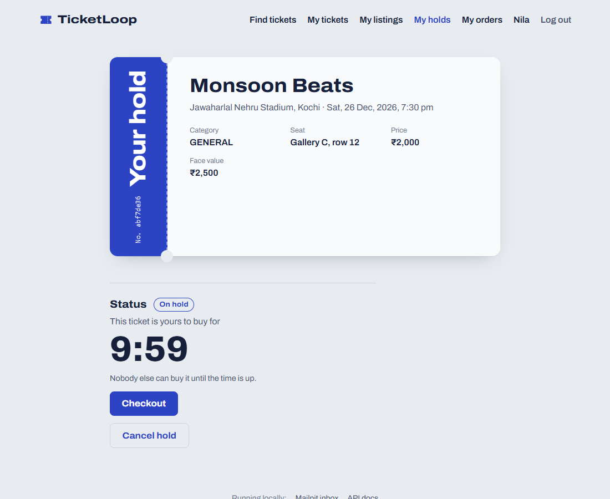
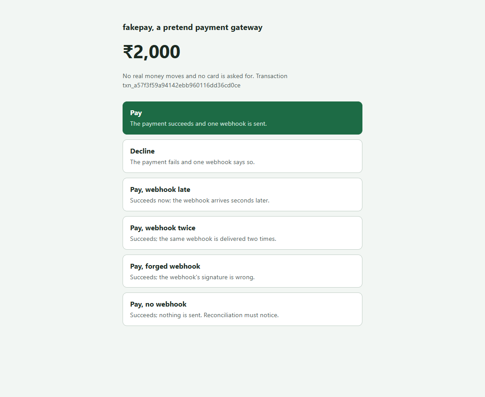
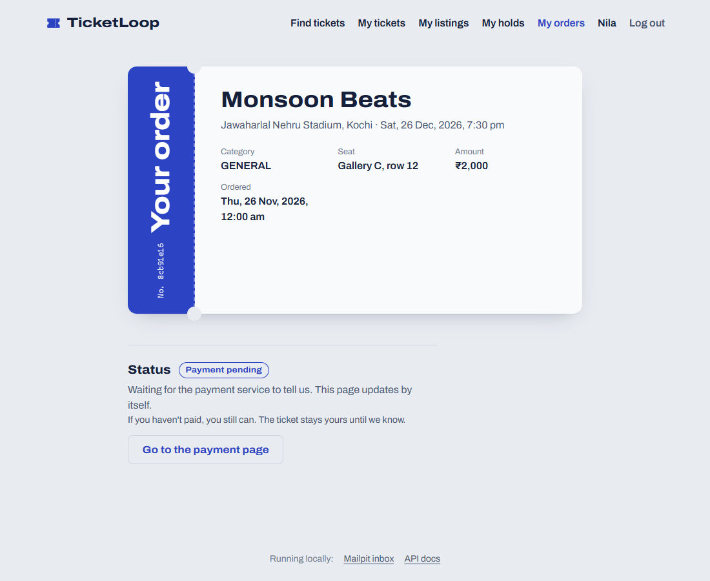

The 30-second answer
Every request that moves money carries an Idempotency-Key. The key row, the work and the stored answer are one transaction, so a retry either finds all three or none. Under it, a unique constraint allows one order per reservation, so a buggy client that makes a new key per retry still gets one order.
I save the payment before I talk to the gateway, and send the payment's own id as the gateway's idempotency key. Whatever dies in between, asking again returns the same intent. The webhook that answers is signed with HMAC over the raw bytes and a timestamp, stored once by its event id, and applied in the same transaction that stores it.
Webhooks get lost, so reconciliation asks the gateway about anything left open, and repairs it through the same two functions the webhook uses. And the ten-minute clock never touches a hold that is being paid for: the only thing that may release it is the gateway saying nothing was paid. Silence is not an answer.
What I built
- Idempotency keysA key table with a hash of the request. The same request twice gets the stored answer with
Idempotent-Replayed: true; a different request with the same key is a 422; one that is still running is waited for, or a 409 when it's out calling another service.app/modules/idempotency/service.py - Orders
POST /ordersturns a hold into an order at the listing's price. No price comes from the client. The buyer and the seller can read it, and it names neither.app/modules/orders/service.pyapp/modules/orders/router.py - fakepayA separate small app with its own SQLite database and its own checkout page. It shares nothing with the API but the webhook secret. Six outcomes: pay, decline, late webhook, webhook twice, forged webhook, no webhook.
fakepay/main.pyfakepay/store.py - The gateway clientCreate, look up by transaction, look up by my own key. Every way it can go wrong becomes one of two errors: it refused, or it didn't answer.
app/infrastructure/payments/fakepay.py - Payment intentsSaves the payment and moves the reservation to
PAYMENT_PENDING, commits, then calls the gateway with no transaction open. An order whose payment is already open gets that one back.app/modules/payments/router.py - WebhooksHMAC-SHA256 over the exact bytes plus a timestamp, compared in constant time, five minutes of tolerance. One row per event, kept for ever, with what came of it.
app/modules/payments/webhooks.py - One way to settle
succeed()andfail()change the payment, order, reservation and listing together. Webhook, reconciliation and expiry all call them.app/modules/payments/service.py - ReconciliationAsks the gateway about every payment left open for five minutes, repairs each in a transaction of its own, and records the run with every mismatch it found.
app/modules/payments/reconcile.pyscripts/reconcile_payments.py - Expiry that asks firstFifteen minutes after a hold's end, the expiry job asks the gateway about buyers who went to pay and never came back.
scripts/expire_reservations.py - ScreensCheckout on a hold, the order page that waits for the webhook, My orders.
frontend/src/components/Checkout.tsxfrontend/src/pages/OrderPage.tsx
From Checkout to Paid
One press of a button, four places it can be cut off, and what happens at each.
- 1The order
INSERT … ON CONFLICT DO NOTHINGclaims the key. A second copy of the request waits on that row's uncommitted insert, so it can't do the work at the same time. Then the reservation is locked and checked, the order inserted with the listing's price, the 201 body stored under the key, and all of it committed. Cut off before the commit: nothing exists and the retry starts fresh. After: the retry gets the stored body. - 2The payment, saved first
A second key, this time with a lock marker. The reservation goes to
PAYMENT_PENDING, which takes it out of the expiry job's reach, the order follows, and the payment row is saved asCREATED. Commit. From here money may move, and there's a row that says so. - 3The gateway is asked
No transaction and no pooled connection is held while waiting for someone else's server. The payment's id is the gateway's idempotency key. Cut off here: reconciliation, or the buyer's own retry, asks again with the same key and gets the same intent.
- 4The intent is kept
The payment becomes
PENDINGwith the gateway's transaction id. If it was settled while the gateway was answering, the buyer gets a 409 and not a page to pay on. - 5The buyer pays, the webhook comes
Signature first, over the bytes as received; only then is anything parsed. The event row is inserted, and a repeat inserts nothing and gets its 200. Then
succeed(): lock the reservation, check the payment is still open, move payment, order and reservation. One transaction, so a crash anywhere means the gateway tries again and finds a clean slate. - 6Or it doesn't come
Five minutes later reconciliation asks the gateway, hears "succeeded", and calls the same
succeed(). If the webhook then turns up, it finds the payment settled and is stored asIGNORED.
# app/modules/payments/webhooks.py: before anything is parsed
expected = hmac.new(
secret.encode(), timestamp.encode() + b"." + body, hashlib.sha256
).hexdigest()
if not hmac.compare_digest(expected.encode(), signature.encode("utf-8", "replace")):
raise BadWebhookSignatureError()The paid ticket and the clock
The buyer's ten minutes end while they're on the gateway's page. Three things fight over one reservation row:
- Checkout moves it
CREATED → PAYMENT_PENDING, only if its time isn't up. That happens before the gateway is called. - The expiry job moves it
CREATED → EXPIRED. It never looks atPAYMENT_PENDING. - The overdue check looks only at
PAYMENT_PENDING, only fifteen minutes after the end, and only acts on what the gateway says. fakepay refuses money for an intent older than fifteen minutes, so "expired" is final. - Whoever locks the row first decides. The others re-check and find there's nothing left to do. I raced payment against expiry 50 times, and the paid ticket was released in none of them.
Screens
Run docker compose up -d db mailpit minio fakepay, the API, and npm run dev in frontend/. Reserve a ticket and press Checkout.
- Your holdNow with Checkout. Once paying has started, the hold can't be given up, and the page links to the order.
/reservations/:reservationId - fakepayThe gateway's own page, on its own port. Pick what the payment does.
localhost:8090/checkout/:transactionId - Your orderWaits for the webhook and turns to Paid by itself. An unfinished payment can be continued from here.
/orders/:orderId - My ordersEverything you've bought, or tried to, newest first.
/orders



Decisions
Doing things once
A key table in Postgres
Instead of keys in Redis
The key, the order and the stored answer have to commit together. In Redis they're two systems, and the gap between them is exactly where the duplicate order comes from.
Two layers
Instead of only the key
The key catches the same request sent twice. uq_orders_reservation catches a different request for the same thing: a client that makes a new key per retry, or a second tab.
A refused request doesn't use up its key
Instead of storing errors too
A 409 or a 503 is about now. If it were stored, a buyer who waits a moment and presses again would be told the same thing for 24 hours.
Continue the open payment, whatever the key
Instead of 409 for a new key
A closed tab, a second device and a retry after a crash are all the buyer asking to carry on paying. They get the same intent and the same page.
Commit before calling the gateway
Instead of one transaction around the call
A transaction held open during someone else's slow HTTP call holds a row lock and a pooled connection. And if my process died after the gateway said yes, the rollback would erase the only trace of it.
Believing the gateway
Sign the raw bytes
Instead of sign the parsed JSON
Parsing and writing JSON again can reorder keys or change spacing. The signature has to cover what was actually sent.
A timestamp inside the signature
Instead of just the body
Otherwise a captured webhook is valid for ever. With it, a new timestamp breaks the signature and an old one is refused after five minutes.
200 for an event I can't apply
Instead of an error status
Any other status makes the gateway send it again, for ever. The event is kept as FAILED with the reason, and logged as an error for a person.
Compare the amount
Instead of trusting the event's type
A genuine webhook for the wrong amount means something is badly wrong. It changes nothing.
A gateway that forgot an id it gave me is a fault
Instead of treating it as unpaid
"Not found" from a payment provider could be a restored backup or a wrong account. Releasing a ticket on that could sell it twice.
Time
The database's clock
Instead of each process's clock
Four API processes and a worker would have four opinions about whether ten minutes are up. Postgres has one.
clock_timestamp() after waiting for a lock
Instead of now()
now() is when the transaction began. A request that waited three seconds for the row would be checking the hold against three seconds ago.
Reconcile only what nobody has touched for five minutes
Instead of everything open
A request that is at this moment waiting for the gateway must not have its payment failed because the gateway hasn't got it yet.
fakepay
A separate process with its own database
Instead of a class inside the API
The failures worth testing are between two systems: a webhook that arrives before the response to the request that caused it, a process that dies between two calls. An in-process fake can't produce them.
SQLite
Instead of the same Postgres
Sharing a database would let me cheat. It's one file, and it's all the gateway needs.
No refunds
Instead of refunding a late payment
Cut from the roadmap. A payment that succeeds after I failed it is logged as an error for a person, and fakepay refuses to take such money anyway.
Frontend
One key per click, kept until it's answered
Instead of a key per request
The browser may retry, and so may the buyer. The same press has to be the same key, both halves of it, or the server can't tell.
The order page asks the server
Instead of trusting the return from the gateway
Anyone can open the return address. Only the order's status says whether it's paid.
Reset the button when the page comes back from the browser's cache
Instead of leaving it
Pressing Back on the gateway's page can bring the old page back exactly as it was, button disabled.
Interview questions
Answer out loud first, then open.
What is an idempotency key, and how did you implement it?
A value the client makes once per action and repeats on every retry, so the server can tell a retry from a second action. I insert a row for (user, key) with ON CONFLICT DO NOTHING. If it went in, I do the work and store the response in the same transaction. If it didn't, I read the row: a different request hash is a 422, a stored response is replayed. A concurrent duplicate blocks on the uncommitted insert until the first one commits, so there's never a moment when both do the work.
Why do you need the unique constraint as well?
They catch different mistakes. The key catches one request sent twice. The constraint on reservation_id catches two different requests for the same purchase: a client that generates a new key on each retry, or two tabs. I tested both with 50 concurrent requests: 50 identical bodies with one key, one 201 and 49 conflicts with fifty keys.
How do you call an external service safely from inside a request?
Save what I'm about to do, commit, call, save the answer. The saved row means a crash leaves a trace; no transaction is open during the call, so a slow gateway doesn't hold locks or use up the pool; and the row's id goes along as the gateway's idempotency key, so repeating the call can't create a second intent.
What if you crash after the gateway says yes and before you save it?
The payment is CREATED with no transaction id. The buyer's retry, or reconciliation, asks with the same key and gets the same intent, and I save it then. If the gateway has never heard of the key, the call never arrived. Once the hold has ended, the payment is failed so the ticket can go back on sale; before that, the buyer can still try again.
How do you verify a webhook?
The gateway sends a timestamp and HMAC-SHA256(secret, timestamp + "." + body). I compute the same over the bytes I received, before parsing, and compare with compare_digest so the time taken says nothing about where they differ. Then I check the timestamp is within five minutes. A forged one gets 401 and writes nothing.
Why does a duplicate webhook get a 200?
Because the gateway reads anything else as "try again". Having it already is success. The unique index on (provider, event id) makes the second insert do nothing, and the insert and its effect are one transaction, so "already stored" also means "already applied".
What if the webhook never arrives?
Reconciliation. Every payment left open and untouched for five minutes is looked up at the gateway, and the answer goes through the same succeed() and fail(). I made fakepay forget 20 webhooks: one run fixed 20, the next fixed 0. Each run leaves a row saying what it checked, what differed and what it did.
The webhook and reconciliation arrive together. What happens?
Both lock the reservation row, so one goes first. The second, once it has the lock, re-reads the payment and finds it's no longer open, and does nothing. The event is stored as IGNORED. There's a race test for exactly this.
A buyer pays at 9:59 and the hold ends at 10:00. Who wins?
The buyer. Starting to pay moves the reservation to PAYMENT_PENDING before the gateway is even called, and the expiry job never touches that status. Both moves need the row to be CREATED, and the row lock lets one of them see it first. If the clock got there first, the buyer gets a 409 before any money moves.
And if they open the payment page and walk away?
The gateway gives them 15 minutes. After that, plus a margin, the expiry job asks what happened. If it expired unpaid, the order is cancelled and the ticket released. If it was paid, it's marked paid. If the gateway doesn't answer, nothing happens and it asks again later. The clock alone never releases it.
Why not store the gateway's failure under the key?
It isn't the answer to the request, it's the state of the world. The buyer should be able to press again with the same key and have it work.
What's the lock order, and why does it matter here?
Reservation, order, payment, listing. Settling a payment touches all four, and cancelling or expiring touches three of them. If two paths took them in different orders they could each hold what the other needs. Locking the reservation first also means that whoever has it can read the rest and trust it.
How did you test the gateway misbehaving?
fakepay is a real process in the race tests and the browser tests, with six outcomes. For the API tests I use a fake transport that can time out, answer 500, answer HTML, or answer something that isn't the shape I expect. Each of those becomes "unavailable", and the test checks nothing was released.
Traps and fixes
- A buyer sent to pay for a ticket that was already gone. While the gateway was answering, reconciliation could settle the payment, and the request still returned a checkout page. It now looks at the payment again after the call and answers 409.
- Failing a payment its buyer had just come back to. Reconciliation reads the payment, asks the gateway, hears "no such intent", and by then the buyer has pressed the button again and is creating it.
fail()now does nothing if the payment has been touched since it was read, and pressing the button touches it. - A race that always ended the same way. Payment against expiry gave the same winner in all 50 rounds, so half the code was never tested. The webhook now gets a delay that grows each round, and the test fails unless both outcomes turn up.
- Two clocks in one job. Reconciliation worked out "five minutes ago" from Python's clock and compared it with Postgres's. In Docker on a laptop that slept, they differ. It's the database's clock on both sides now.
- Back from the gateway froze the button. Browsers keep the old page in memory and show it as it was, with Checkout still disabled and spinning. The page now listens for being shown again.
- An expired intent handed out again kept the ticket for ever. Coming back to an order returned the same intent even after the gateway's 15 minutes, and touched the payment, so reconciliation never asked about it. A buyer who kept coming back kept the ticket without paying. Now the gateway's answer is applied there and then (409, and the order is
CANCELLEDorPAID), and only a payment with no transaction id yet is touched. - A no that wasn't about this payment. A refusal on a second try put the ticket back on sale, while the page from the first try could still take the money. Now a refusal releases only a payment this request created. A 401 or a 404 from the gateway is about how I asked, so it counts as silence.
- One silent payment stopped all the others. Reconciliation stopped at the first lookup without an answer, so one payment the gateway wouldn't talk about hid everything behind it, every run. It now notes that payment and goes on, and stops only after three in a row.
- The 503 message vanished. After a failed Checkout the hold refreshes and shows as paying, which unmounted the button and its alert. The paying view now keeps the message and offers Go to the payment page.
Known gaps, on purpose
- Paid, but the ticket hasn't moved. M9 hands it over: an outbox row in the same transaction as
PAID, a worker, and a transfer. - Reconciliation and expiry are scripts until M9's Celery beat runs them.
- No refunds and no payouts. Cut from the roadmap; a payment that succeeds too late is an error in the log.
- The order page always speaks to the buyer. A seller who opens an order's address reads "Your order", and the API refuses them if they press the pay button.
Check it still works
docker compose up -d db mailpit minio fakepay
uv run alembic upgrade head
uv run pytest tests/unit/test_fakepay.py tests/unit/test_fakepay_gateway.py # the gateway and its client
uv run pytest tests/integration/test_payment_webhooks.py tests/integration/test_reconciliation.py
uv run pytest tests/concurrency/test_payment_race.py # orders, webhooks, the clock
uv run python -m scripts.reconcile_payments # SUCCEEDED: checked 0, fixed 0.
uv run python -m scripts.expire_reservations --once # and "Settled 0 overdue payment(s)."
REQUIRE_POSTGRES=1 REQUIRE_STORAGE=1 uv run pytest # 1028 tests, what CI runs
cd frontend && npm run dev # localhost:5173
npm test # 146 unit tests
npm run e2e # 20 browser tests, 2 new in this module
gh run list --workflow ci.yml --limit 3